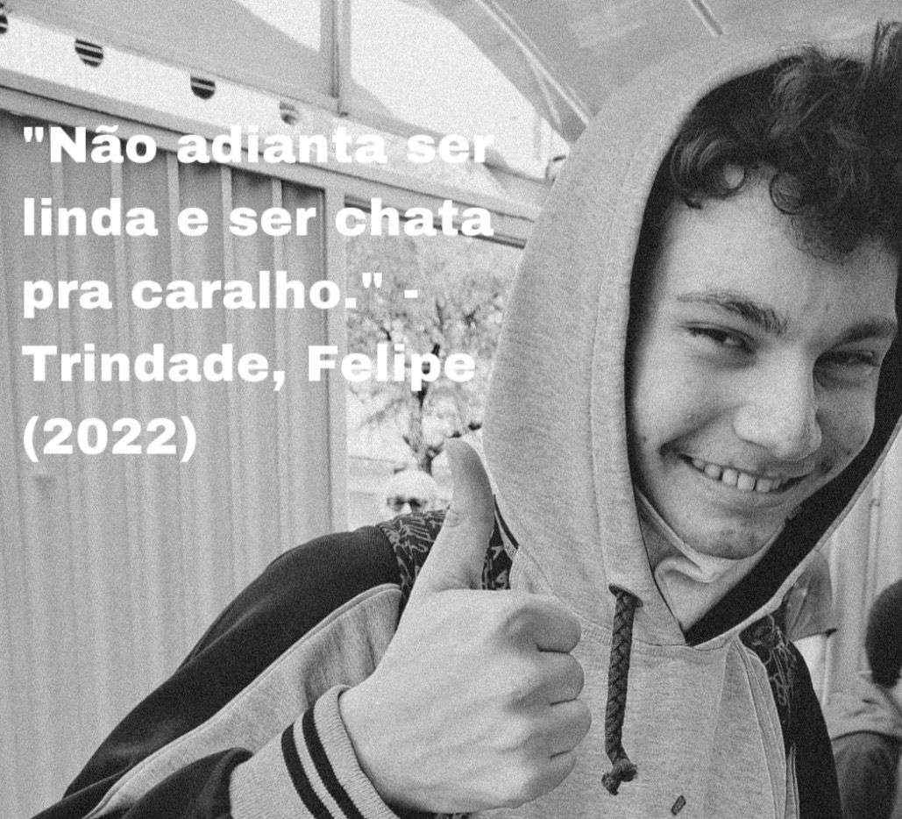

Sobre mim
Nasci e cresci em Manaus, Brasil. Gosto de aprender coisas novas, principalmente sobre programação, não tenho problemas com trabalho em equipe. Costumo ser bom em resolução de problemas e também não tenho problemas em ensinar as técnicas que eu sei para meus colegas.
Comecei a programar em 2024, na época eu não conhecia muito sobre programação e acabei caindo nela de paraquedas, mas conforme eu fui estudando e aprendendo a programar, eu me dei conta de que a porgramação, querendo ou não, é uma arte criativa. Você cria coisas quando programa, seja uma UI que você julga ser a melhor para o User Experience, ou um jogo que conta uma história, com mecânicas únicas e cenários bem estruturados. Gosto de imaginar que todo programador é como um artista de artes visuais, uma artista visual tem uma ideia e a externaliza no papel, um programador tem uma ideia e a externaliza no código.
